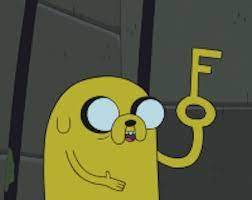

Jake, o Cão é um dos personagens principais de Hora de Aventura. Ele é um híbrido de cão/metamorfo, referido pelos outros como um "cão mágico". É o maior companheiro do humano Finn, seu irmão adotivo. Sua forma sem alterações é a de um bulldog de cor amarela com olhos grandes e característicos. Ele pode se transformar em todos os tipos de formas graças aos seus poderes.